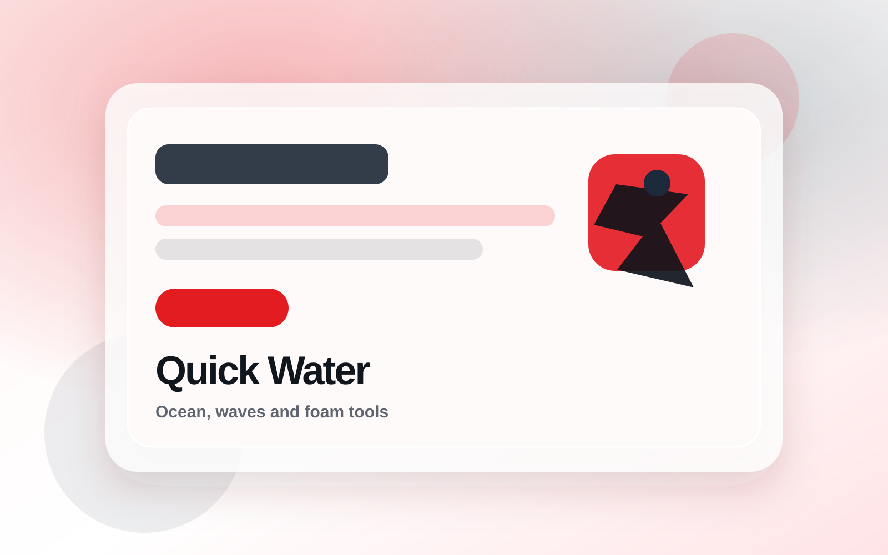
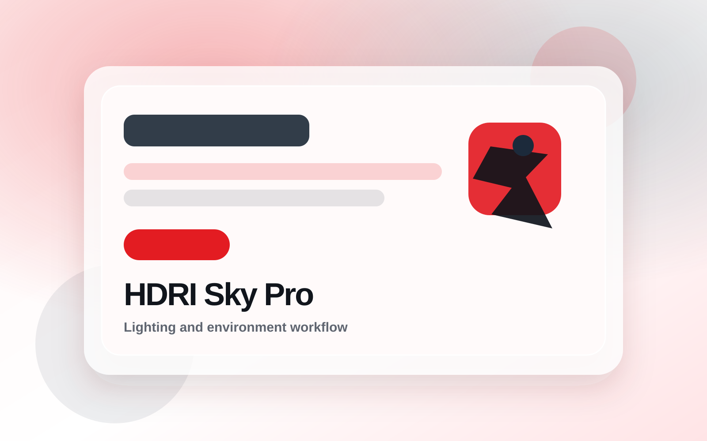
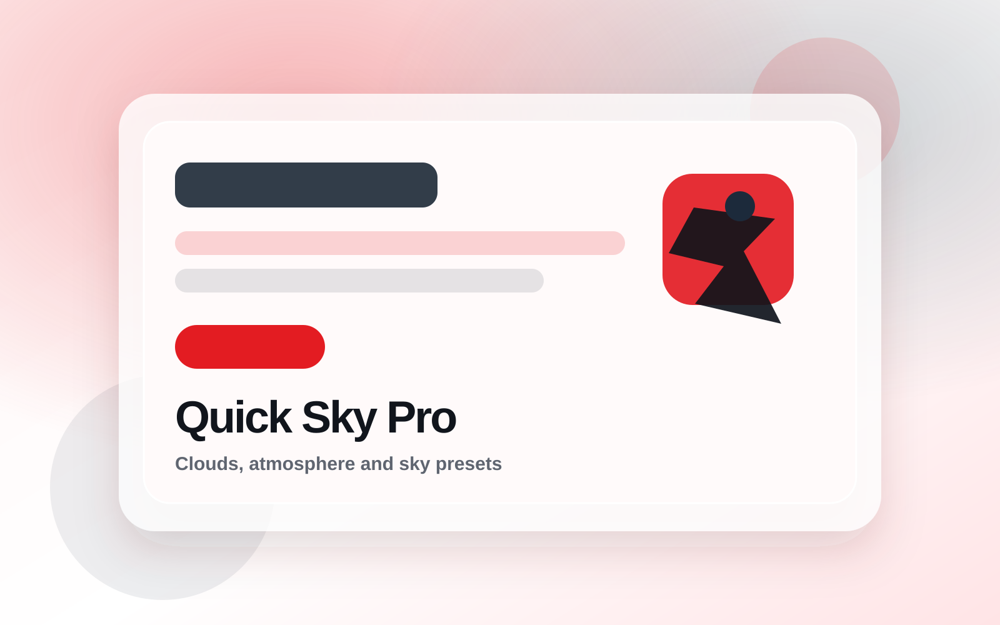
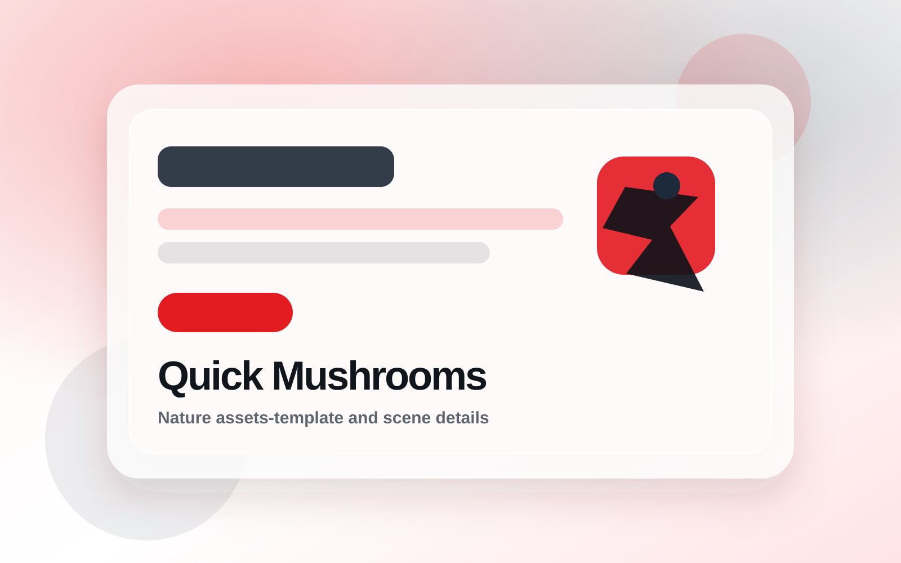

Lighting and Sky
Shape mood, sky direction, lighting presets, and environment setup with tools designed for fast visual decisions.
HDRI Sky ProQuick Sky ProLight Master Pro
View lighting tools
MambaCG creates Blender addons, procedural workflows, 3D assets-template, lighting tools, water tools, render automation, and scene workflow systems for artists who need practical production speed.

Quick Water - Ocean FX
HDRI Sky ProExplore focused addons for lighting, water, scene cleanup, render automation, nature assets-template, and atmospheric workflows.
MambaCG products are organized around common production needs, so artists can build scenes without rebuilding the same systems each time.
Shape mood, sky direction, lighting presets, and environment setup with tools designed for fast visual decisions.
Add ocean surfaces, wave looks, fog layers, and atmospheric depth without starting every node setup from zero.
Prepare files, organize production scenes, run repeatable render tasks, and keep complex Blender projects easier to manage.
Build organic scene detail with focused asset products and environment helpers for cinematic Blender compositions.
Select a production stage to see how MambaCG tools fit into a Blender workflow.
Reduce repeated setup work across scene cleanup, lighting, water, render, and asset workflows.
Use focused controls and production panels instead of scattered manual operations.
Start from practical presets, then tune them for the look and requirements of each project.
Keep workflows adjustable so scenes can evolve without rebuilding the entire setup.
Prioritize clear outcomes, cinematic presentation, and repeatable production habits.
Replace these static placeholder files with final product renders or screenshots as the catalog grows.


Support and documentation help users get started faster and keep tools useful as Blender workflows evolve.
Guidance for product questions, setup issues, and practical workflow use.
Products can be maintained as Blender changes and artist workflows mature.
Clear usage notes help users understand controls, presets, and intended workflows.
Feedback can shape future tools, refinements, and production-focused improvements.
These are intentionally marked as placeholders until real customer quotes are available.
"Placeholder quote: describe how a real artist uses a MambaCG tool in production."
Creator name, role
"Placeholder quote: add a verified comment about speed, setup clarity, or workflow quality."
Studio or artist name
"Placeholder quote: include a real product-specific result once you have permission."
Blender creator